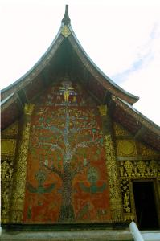
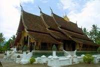
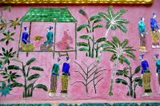
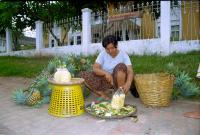
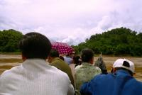
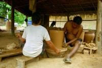
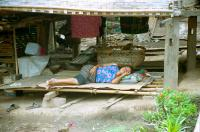

|
Lundi 11 juin
En route pour Luang Prabang! On n'avait pas vu cela depuis le Népal quand on
avait pris un tour organisé pour Chittwan: pas un seul autochtone dans le bus!!!
C'est un peu tristounet, d'autant qu'il pleut des trombes. Le bon côté c'est
que la pluie ravive les couleurs de la terre et des plantes et que les nuages
enfermant le sommet des pics rocheux, leur donnent un petit air mystérieux...
On s'enfonce entre les montagnes en suivant une petite route tortueuse. On grimpe,
on descend, on se retrouve au-dessus des montagnes, à flanc de falaises... La
végétation recouvre tout, falaises comprises et on a l'impression que toujours
plus de plantes veulent pousser bien qu'il n'y ait plus de place. Du coup, les
nouvelles venues s'intercalent partout tant bien que mal. Et puis, dans un village,
entrent de drôles de laotiens dans le bus. Ils ont tous de petits autocollants
blancs triangulaires collés sur les tempes et entre les sourcils et ont l'air
de faire la tête. Ils sont une quinzaine, enfants et adultes. Et... ce sont
des montagnards! Or les montagnards ne supportent pas les transports! On avait
déjà vu ça à Paï en Thaïlande. Au bout d'une demie heure, un véritable festival
de gerbi-gerba commence! TOUS! Ils sont TOUS malades! Et ils n'ont pas tous
le temps d'ouvrir les sachets plastiques prudemment distribués dès leur entrée
par le contrôleur... Il y a du riz mouillé partout par terre qui s'étale au
rythme des virages secs du chauffeur lequel -sans pitié aucune pour ses compatriotes
malades- fonce à toute brinquezingue! Devant nous, ils sont trois penchés à
la fenêtre: la mère, le fils et le père qui a dû se mettre debout sur la banquette
pour pouvoir accéder à la fenêtre et rendre son riz tranquillement au-dessus
de la tête des autres... Finalement, on s'arrête pour étaler des feuilles de
bananier par terre, ils sont plusieurs à y avoir involontairement répandu leur
riz prédigéré et ça commence à être désagréable. Au fait, les autocollants blancs,
c'était sensé protéger du mal des transports...
Mardi 12 juin
Luang Prabang est une grosse ville tranquille au bord du Mékong. On a atterri
dans une guesthouse vraiment fascinante. Elle est tenue -comme toujours ici-
par toute une famille. Du moins, c'est ce qu'on suppose parce qu'on n'a pas
pu leur demander, aucun ne parle anglais. Mais tous étaient gentils avec nous.
Il y a celui avec le bébé. C'est fou ce que cela peut rendre fier un gamin.
Que ce soit en Inde, en Thaïlande ou au Laos, dès qu'une mère, un père, un grand
parent se retrouve avec le petit nouveau dans les bras, c'est toujours la même
scène qui se rejoue devant nos yeux: les regards insistants à notre égard, les
petits signes en levant discrètement le bambin, les sourires et les allers et
venues près de nous... Il faut être sûr qu'on ait vu le jeune prodige! En tout
cas, celui-ci de bébé a une bonne tronche et les cheveux tout hérissés. Il y
a la jeune fille qui nous a invités à manger pour fêter ses 30 ans - mais bon,
on revenait du resto... Et puis il y a ces deux gars qu'on a longtemps hésité
à qualifier ainsi. Complètement efféminés, travestis pour ainsi dire, ils sont
adorables. Mais en Thaïlande, les moeurs à ce sujet sont un peu en avance et
l'homosexualité semble être traitée avec tolérance, mieux, indifférence.
Sinon, à Luang Prabang, il y a plein de temples. Même que c'est classé patrimoine
de l'humanité par l'UNESCO. Si, si, des temples...
Mercredi 13 juin
Même si on peut se laisser tromper par sa casquette de jeune - une Nike, une
contre-façon sans doute - il a quelques années au compteur le petit bonhomme
qui essaie de nous vendre son "tour" organisé dans les villages alentours. Une
vraie agence de voyage à lui tout seul le papi. Description alléchante de son
truc - en français s'il vous plaît - et photos à l'appui. Bon, certaines sont
des cartes postales, mais on a déjà vu ça dans des vraies agences aussi. Faut
dire que pour photographier des filles travaillant aux champs en costume traditionnel,
faut se lever tôt. Mais l'habit traditionnel, même si ce n'est pas pratique
pour labourer, ça fait rêver le touriste...
Enfin, même s'il est fort sympathique le petit vieux, des visites guidées comme
ça, ce n'est pas trop notre truc. On préfère se perdre dans la campagne et observer.
En plus, il est déjà midi à force de papoter, il nous faut trouver une activité
qui tienne sur l'après-midi maintenant. "Allez au village des potiers" nous
dit le papi. Et il avait bougrement raison le bougre. Vraiment sympa ce village.
On commence par traverser le beau et mystérieux Mékong rouge en pirogue, puis
on marche dans la campagne accompagné par les innombrables bruits d'insectes,
sous les cocotiers, bananiers, bambous, dans la forêt, à côté de la montagne.
Une heure plus tard, on arrive. On a la chance de voir la fabrication complète
d'une grosse jarre par un monsieur et sa dame. Et aussi quelqu'un qui pétrissait
de l'argile en marchant dessus, un autre qui aiguisait un grande scie. Des attitudes
et des gestes simples qui touchent, on ne sait pas vraiment pourquoi. Peut-être
l'envie d'un retour à la terre, la même envie qui nous avait poussés à bêcher
le jardin il y a deux ans. En tout cas, il vaut mieux que ça reste une envie,
parce que la vie à la campagne, c'est peut-être chouette à photographier, mais
ce n'est sûrement pas simple tous les jours. Le village est chouette en tout
cas. Il est très animé. Beaucoup de gens y travaillent. Les bruits sont agréables
et reposants: le bois qui est fendu, la lime sur la scie, le marteau qui répare,
les poules, les cochons et les enfants qui s'amusent. Pour un peu on se croirait
dans un certain petit village gaulois...
En plus des potiers, il y a une "usine" à briques. Un gros four rond d'au moins
10 mètres de diamètre, rempli de briques prêtes à être cuites. Les gens qui
y travaillent sont en train de charger le four, en disposant de façon très géométrique
les briques à l'intérieur. Couche par couche, en marchant sur celles déjà imbriquées,
c'est le cas de le dire. A côté du four, des briques alignées qui sèchent au
soleil en attendant d'être chargées. Un peu plus loin encore, la "machine à
briques" qui génère un boudin de briques qu'il reste à découper.
Suite du voyage : Retour à Vientiane
|

Laos
Luang Prabang
|

Laos
Luang Prabang
|

Laos
Luang Prabang
|

Laos
Luang Prabang
|

Laos
Luang Prabang
|

Laos
Luang Prabang
|

Laos
Luang Prabang
|
|
|